OOAD Final Project · Group 1
Smart Farm Monitoring System
Eleven deliverables, each shown as concept, diagram, real Java code and the running app,
plus what came after: sensor repair, thermostat rules, a device catalog and many farms on one server.
github.com/RamekhCHHOENG/smart-farm-monitoring
How every chapter works
1
What the deliverable means, in plain words.
2
The UML from our design, rendered from the PlantUML sources in the repo.
3
The Java that implements it, with its file and line numbers.
4
The screen where you can see it work.
Added since: new device kinds, sensor repair, thermostat rules with a fan-heater interlock, a Devices page, a device catalog, and one server for many customer farms.
Deliverable 1 · Problem statement
Problem
Small farms in Cambodia are checked by hand. Dry soil, heat stress in a chicken house or an empty feeder are found too late: crop loss, sick animals, wasted water and feed, long hours.
Solution
Sensors in crop beds, greenhouses and chicken houses; rules that start pumps, fans, heaters, misters and feeders by themselves; alerts to farm staff; schedules; reports.
Core value
Response in seconds, not hours · fewer losses · lower workload · decisions based on data
The running system
A vegetable bed, a chicken house and a greenhouse, refreshing every 4 seconds, with a one-sentence summary of the farm.
Today’s tasks, readings in range, alerts and machine starts, a 24-hour chart, and a farm map with the most stressed zones first.
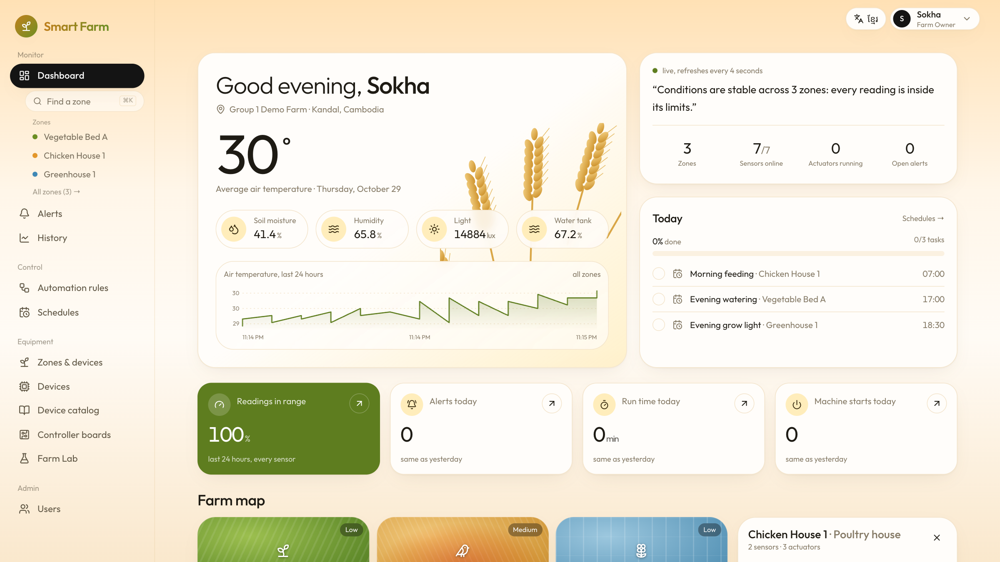
Deliverable 2 · Actors and permissions
| Actor | Type | Can do |
|---|---|---|
| Farm Owner | Primary | Everything: zones, rules, schedules, staff accounts |
| Farm Worker | Primary | Watch the dashboard, start and stop devices, acknowledge alerts |
| Technician | Supporting | Register devices, report faults, repair actuators and sensors |
| Sensor Device | External system | Send readings and read its relay state, with a device key |
| Notification Service | External system | Deliver alerts (console or Telegram) |
Deliverable 2 · In the code
Every write operation calls AccessPolicy.require with the roles allowed to do it.
The owner always passes; other roles only get what the permissions table gives them.
Hiding a button is never the only protection.
service/AccessPolicy.java
23 public AppUser require(Long userId, Role... allowed) {
24 if (userId == null) {
25 throw new UnauthorizedException("Please log in");
26 }
27 AppUser user = users.findById(userId)
.orElseThrow(() -> new ForbiddenException(...));
28 if (user.getRole() == Role.OWNER
|| Arrays.asList(allowed).contains(user.getRole())) {
29 return user;
30 }
31 throw new ForbiddenException(switch (user.getRole()) {
32 case WORKER -> "A Farm Worker account cannot do this...";
33 case TECHNICIAN -> "A Technician account cannot...";
34 case OWNER -> "Not allowed";
35 });
Deliverable 3 · Functional requirements
| ID | Requirement | Where in the app |
|---|---|---|
| FR-01 | Farm and zones (crop, poultry) | Zones & devices · FarmService |
| FR-02 | Register, rename, repair, remove devices | Devices · FarmService, SensorService |
| FR-03 | Receive and validate readings | ReadingController · MonitoringService |
| FR-04 | Live dashboard | Dashboard · QueryService |
| FR-05 / 06 | Rules, evaluated on every reading | Automation rules · AutomationRule |
| FR-07 | Scheduled tasks | Schedules · TaskService |
| FR-08 | Manual control with a log | Dashboard · ActuatorService |
| FR-09 | Alerts: breach, fault, offline | Alerts · AlertService |
| FR-10 | History, device log, CSV | History · QueryService |
| FR-11 | Staff accounts | Users · UserService |
Deliverable 4
Eleven use cases for five actors.
«include»: every reading is evaluated against the rules; every manual action is logged.
«extend»: an alert is sent only when a threshold is breached.
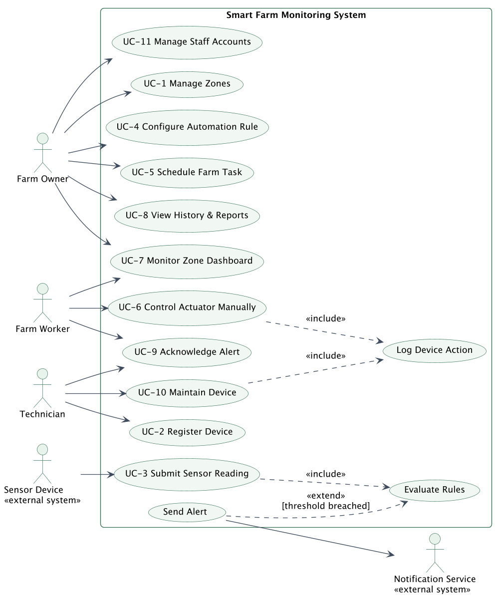
Deliverable 4 · In the code
The device’s request arrives at ReadingController, the use case’s entry point.
«include» Evaluate Rules: the loop over every active rule always runs.
«extend» Send Alert: only inside if (rule.isTriggered(…)).
service/MonitoringService.java
49 public ReadingResult processReading(Long sensorId,
double value) {
51 Sensor sensor = sensors.findById(sensorId)...;
.. // faulty sensor ignored, [valid?] checked (D8)
66 SensorReading reading =
readings.save(sensor.record(value, now));
73 List<String> actions = new ArrayList<>();
74 for (AutomationRule rule :
rules.findBySensor_IdAndActiveTrue(sensorId)) {
75 if (rule.isTargetReached(reading)) {
77 actuatorService.stopAtTarget(rule, reading, now);
80 } else if (rule.isTriggered(reading, now)) {
81 actions.add(respond(rule, reading, now));
82 }
83 }
Deliverable 5 · Conceptual domain model
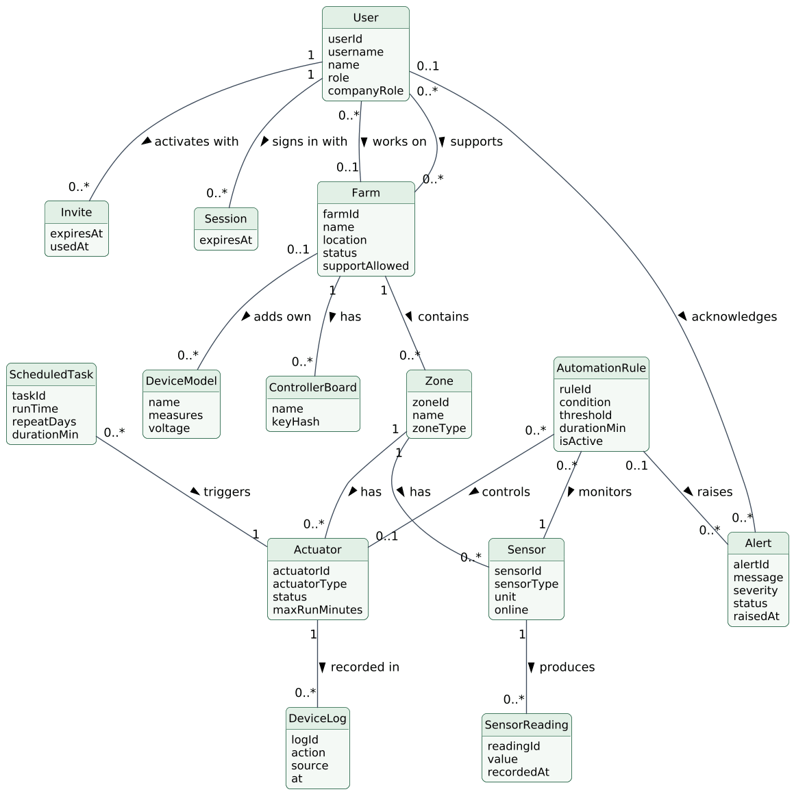
domain/Zone.java
29 // Composition: Zone ◆── Sensor, Zone ◆── Actuator
30 @OneToMany(mappedBy = "zone",
cascade = CascadeType.ALL, orphanRemoval = true)
32 private List<Sensor> sensors = new ArrayList<>();
34 @OneToMany(mappedBy = "zone",
cascade = CascadeType.ALL, orphanRemoval = true)
36 private List<Actuator> actuators = new ArrayList<>();
cascade = ALL and orphanRemoval: deleting a zone deletes its devices, readings, rules and schedules.
Multiplicity 0..* is a List that may be empty: a zone can exist before its devices are installed.
Deliverable 6
Association, composition, inheritance, interface realization and dependency. Now with 6 sensor and 7 actuator subclasses, SensorStatus, and the thermostat members.
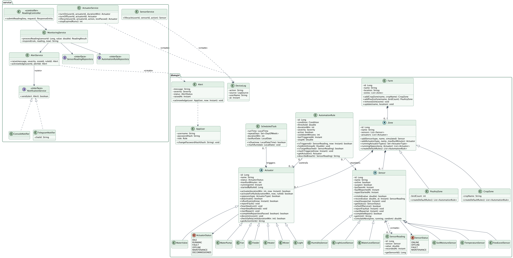
OOP pillar 1 · Encapsulation
status is private. Nobody can set it directly.
The only way to change it is through methods like activate, which check the rules first.
A pump can never be started twice, or run longer than its safety limit.
domain/Actuator.java
27 @Enumerated(EnumType.STRING)
28 private ActuatorStatus status = ActuatorStatus.IDLE;
..
70 public boolean activate(int durationMin, Instant now) {
71 if (status != ActuatorStatus.IDLE
|| !checkSafetyLimit(durationMin)) {
72 return false;
73 }
74 status = ActuatorStatus.RUNNING;
75 runningUntil = now.plus(Duration.ofMinutes(durationMin));
76 return true;
77 }
OOP pillar 2 · Abstraction
Sensor is an abstract class.
Services only know these methods: type, unit, valid range, how it reacts to running actuators.
Each of the 6 concrete sensors fills in the details.
domain/Sensor.java
16 public abstract class Sensor {
..
143 public abstract SensorType getType();
145 public abstract String getUnit();
147 public abstract double getMinValid();
149 public abstract double getMaxValid();
151 public abstract double initialSimulatedValue();
153 /** {@code running}: actuators running in the zone */
154 public abstract double simulateNext(double previous,
Set<ActuatorType> running, Random random);
OOP pillar 3 · Inheritance
HumiditySensor extends Sensor and inherits recording, validation, offline detection and the repair flow.
It only adds what is specific: %, 0 to 100, rises with the mister, falls with the fan.
Added this week in one small class, like the light and tank sensors.
domain/HumiditySensor.java
12 public class HumiditySensor extends Sensor {
23 @Override public SensorType getType() {
return SensorType.HUMIDITY; }
24 @Override public String getUnit() { return "%"; }
26 @Override public double getMaxValid() { return 100; }
..
30 @Override
31 public double simulateNext(double previous,
Set<ActuatorType> running, Random random) {
32 double delta = (TYPICAL - previous) * 0.03 + ...;
33 if (running.contains(ActuatorType.MISTER)) {
34 delta += 1 + random.nextDouble() * 0.8;
36 } if (running.contains(ActuatorType.FAN)) {
37 delta -= 0.4 + random.nextDouble() * 0.3;
39 } return clamp(previous + delta);
OOP pillar 4 · Polymorphism
zone.createDefaultRules() is one call.
A CropZone answers with water, mist and tank rules; a PoultryZone with fan, heater and feed rules.
The service never asks which kind of zone it has.
domain/PoultryZone.java
27 @Override
28 public List<AutomationRule> createDefaultRules() {
29 List<AutomationRule> rules = new ArrayList<>();
32 addRule(rules, "Hot house - cool " + getName(),
TEMPERATURE, ABOVE, 32, FAN, 30, WARNING, 29.0);
34 addRule(rules, "Low feed - refill " + getName(),
FEED_LEVEL, BELOW, 20, FEEDER, 5, WARNING, 80.0);
36 addActuatorRule(rules, "Cold house - heat " + ...,
TEMPERATURE, BELOW, 18, HEATER, 30, WARNING, 21.0);
38 addActuatorRule(rules, "Damp house - ventilate " ...,
HUMIDITY, ABOVE, 85, FAN, 30, WARNING, 75.0);
.. // dim house: light; low tank: valve
44 return rules;
45 }
New this week · Device kinds
| Sensor | Unit | Usually drives |
|---|---|---|
| Soil moisture | % | Water pump |
| Temperature | °C | Fan or heater |
| Feed level | % | Feeder |
| Air humidity · new | % | Mister or fan |
| Light level · new | lux | Light |
| Water tank · new | % | Tank valve |
| Actuator | Limit | Action |
|---|---|---|
| Water pump | 10 min | Watering |
| Fan | 30 min | Cooling |
| Feeder | 5 min | Feeding |
| Heater · new | 30 min | Heating |
| Mister · new | 5 min | Misting |
| Light · new | 120 min | Lighting |
| Tank valve · new | 15 min | Refilling |
Services, screens and the Farm Lab handle a new kind with no special cases. A startup upgrade lets an older database accept them.
Deliverable 7
Device → ReadingController → MonitoringService → Sensor → rules → Actuator → AlertService → NotificationService.
loop over the rules, alt when the actuator refuses.
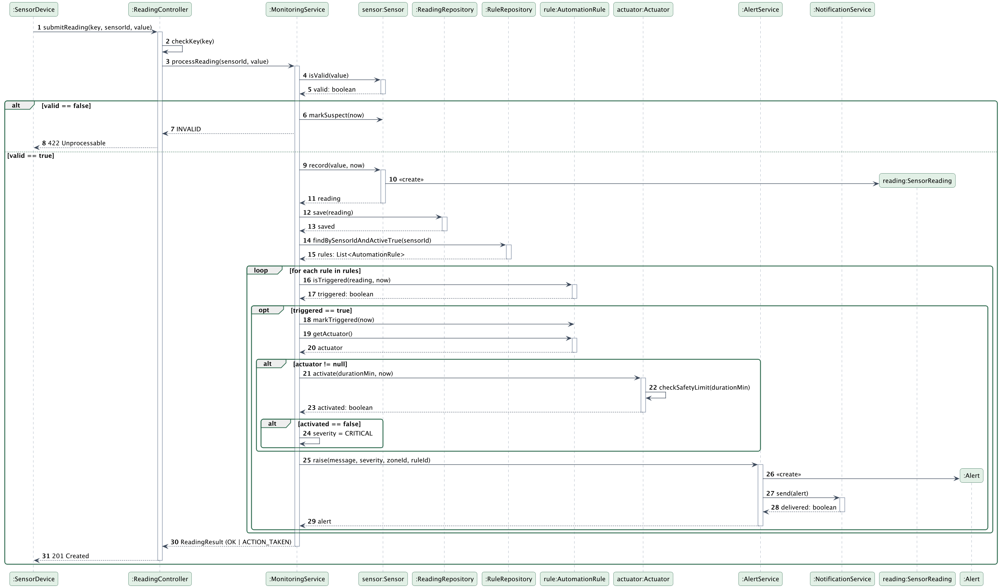
Deliverable 7 · In the code
rule.getActuator(), activateForRule(…) and alertService.raise(…) are the arrows of the diagram.
alt: if the actuator refuses, the alert becomes CRITICAL.
New: the interlock runs first, and a thermostat rule says where it will stop.
service/MonitoringService.java
90 private String respond(AutomationRule rule, ...) {
92 Actuator actuator = rule.getActuator();
96 List<String> interlocked = ... IDLE
97 ? actuatorService.stopOpposites(actuator, now) : ...;
98 if (actuator == null) { outcome = "alert only"; }
100 else if (actuator.activateForRule(
rule.getDurationMin(), now, rule.getId())) {
102 outcome = "... started until 29°C (max 30 min)";
110 } else if (actuator.getStatus() == RUNNING) { ... }
112 else { // refused: fault, offline, safety limit
116 severity = Severity.CRITICAL;
117 }
119 alertService.raise(rule.describeBreach(reading)
+ " - " + outcome, severity, ...);
Deliverable 8 · Activity diagram
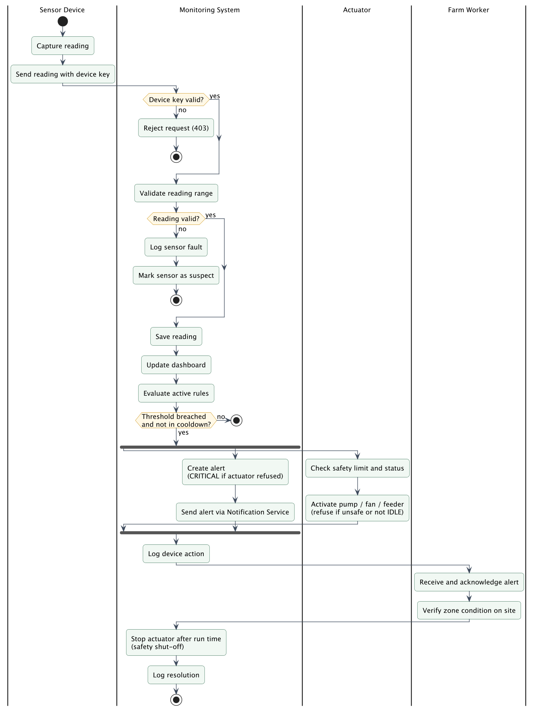
service/MonitoringService.java
54 if (sensor.getStatus() == SensorStatus.FAULT) {
55 return ReadingResult.ignored(...); // 202
56 }
59 if (!sensor.isValid(value)) {
60 sensor.markSuspect(now);
62 return ReadingResult.invalid(...); // 422
64 }
66 readings.save(sensor.record(value, now));
69 if (sensor.isOutOfService()) return ok; // no rule
No: mark the sensor suspect, answer HTTP 422, nothing else happens. Yes: record it, then the fork: the actuator acts while the alert is sent.
Deliverable 9
Six states: IDLE, RUNNING, FAULT, OFFLINE, MAINTENANCE, DECOMMISSIONED.
Each transition is a method that first checks the current state. A wrong transition is refused with HTTP 409.
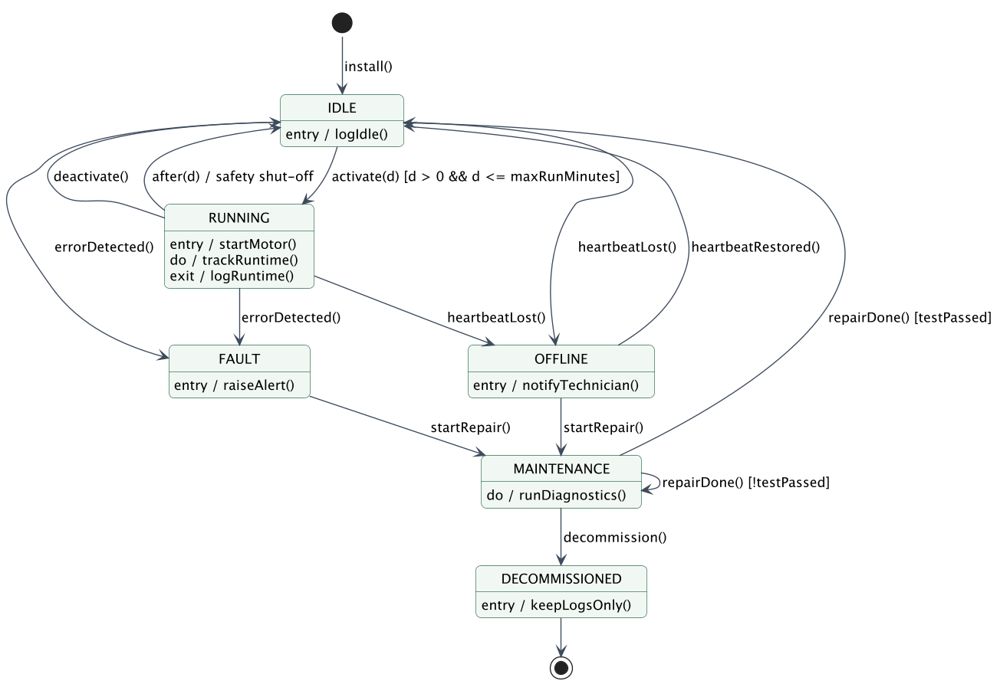
Deliverable 9 · In the code
Each method lists the states it may start from, like the arrows of the diagram.
require(…) throws when the transition is not allowed; the API answers 409 Conflict.
A broken pump can never jump back to IDLE.
domain/Actuator.java
117 /** IDLE/RUNNING → FAULT */
118 public void reportFault() {
119 require(Set.of(IDLE, RUNNING), "report a fault");
120 status = ActuatorStatus.FAULT;
121 runningUntil = null;
123 }
125 /** IDLE/RUNNING → OFFLINE */
126 public void heartbeatLost() {
127 require(Set.of(IDLE, RUNNING), "mark offline");
128 status = ActuatorStatus.OFFLINE;
131 }
133 /** OFFLINE → IDLE */
134 public void heartbeatRestored() {
135 require(Set.of(OFFLINE), "restore heartbeat");
136 status = ActuatorStatus.IDLE;
New · Sensor state machine
ONLINE ⇄ OFFLINE follows the signal: a sensor that stops sending comes back by itself.
FAULT: readings ignored, rules paused, so a stuck probe cannot run a pump all night.
MAINTENANCE → ONLINE only after a valid reading since the repair began.
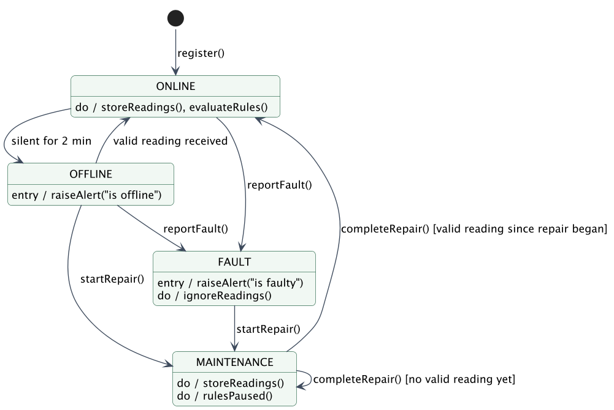
New · In the code
Status is worked out from two timestamps, never stored twice.
Same guard pattern as the actuator: require(…), else 409.
completeRepair passes only if a valid reading arrived after the repair began, not because someone clicked.
domain/Sensor.java
96 public SensorStatus getStatus() {
97 if (repairStartedAt != null) return MAINTENANCE;
100 if (faultReportedAt != null) return FAULT;
103 return online ? ONLINE : OFFLINE;
104 }
118 public void startRepair(Instant at) {
119 require(Set.of(FAULT, OFFLINE), "start repair");
120 repairStartedAt = at;
127 public boolean completeRepair() {
128 require(Set.of(MAINTENANCE), "complete repair");
129 boolean testPassed = online && !suspect
&& !lastSeenAt.isBefore(repairStartedAt);
130 if (testPassed) { faultReportedAt = null;
repairStartedAt = null; }
134 return testPassed;
Live · Technician
The humidity sensor is in FAULT: only “Start repair” is shown, with a note saying its rules are paused.
During the repair the page refreshes itself until the test reading arrives.
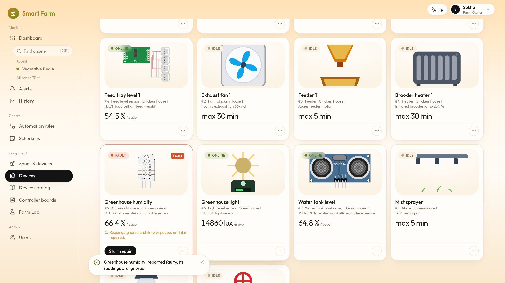
New · Keeping a temperature
Before: above 34 °C the fan blows 5 minutes and stops, even if the house is still hot. Below 20 °C the heater does the same. Runs too short or too long, and fan and heater can take turns.
Now, like a thermostat: each rule has a stop at value. The fan runs until the house is back to 29 °C; the minutes are only a safety limit.
Interlock: fan and heater never run together. Conflict check: rules that would fight are refused.
New · Hysteresis in the code
holdUntil refuses a stop value on the wrong side of the threshold.
isTargetReached: the reading is back in range (Information Expert again).
The actuator remembers which rule started it, so a person’s run is never cut short.
domain/AutomationRule.java
96 public void holdUntil(Double stopAt) {
101 if (condition == ABOVE && stopAt >= threshold)
102 throw new IllegalArgumentException(
"'Stop at' must be below " + threshold ...);
.. // and the mirror case for BELOW
110 this.stopAt = stopAt;
111 }
..
118 public boolean isTargetReached(SensorReading r) {
119 if (!keepsRange()) return false;
122 return condition == Condition.ABOVE
? r.getValue() <= stopAt
: r.getValue() >= stopAt;
123 }
New · Interlock
domain/Heater.java
9 public class Heater extends Actuator {
21 @Override public String getActionVerb() {
return "Heating"; }
22 @Override
public boolean opposes(ActuatorType o) {
return o == ActuatorType.FAN; }
The heater knows its opposite; the fan says the same about the heater. Other actuators oppose nothing.
service/ActuatorService.java
88 List<String> stopOpposites(Actuator a, ...) {
90 for (Actuator other :
a.getZone().runningOpposites(a)) {
91 if (other.deactivate()) {
92 deviceLogs.save(new DeviceLog(other,
93 "interlock: stopped so ... can run"));
96 }
Called before a rule, a schedule or a worker starts an actuator. The zone’s log says why the other one stopped.
New · Conflict check
service/RuleService.java
83 private void checkNoFight(AutomationRule rule) {
87 for (AutomationRule other : rules on this sensor) {
88 // skip itself, alert-only rules, same direction
92 upper = the ABOVE rule; lower = the BELOW rule;
95 if (lower.getStopValue() >= upper.getThreshold())
96 throw ... "they would fight";
101 if (upper.getStopValue() <= lower.getThreshold())
102 throw ... "they would fight";
Each rule must stop before the other one starts, leaving a quiet band between them. The message names both rules and what to change.
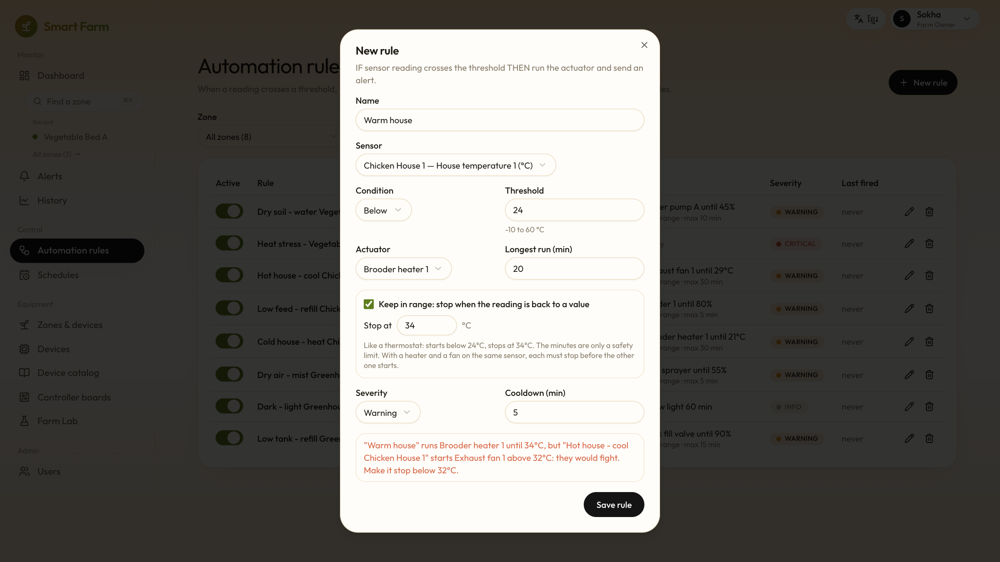
Live · Automation rules
Tick Keep in range, set Stop at; the minutes become the longest run.
The rules list can be filtered by zone and searched.
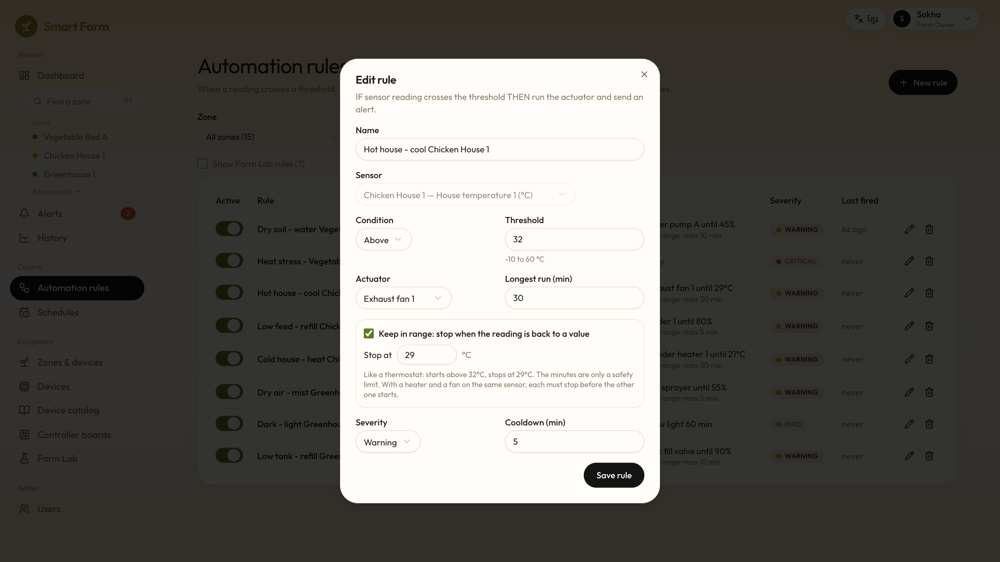
Deliverable 10 · GRASP
Give the job to the class that has the information.
The rule owns condition, threshold and cooldown, so the rule decides whether a reading triggers it.
The sensor knows its range (isValid); the heater knows its opposite.
domain/AutomationRule.java
76 public boolean isTriggered(SensorReading reading,
Instant now) {
77 if (!active || !reading.getSensorId()
.equals(sensor.getId())) {
78 return false;
79 }
80 boolean breached = switch (condition) {
81 case ABOVE -> reading.getValue() > threshold;
82 case BELOW -> reading.getValue() < threshold;
83 };
84 return breached && !isCoolingDown(now);
85 }
Deliverable 10 · GRASP
A class creates the objects it contains or records.
Farm creates its zones, Zone creates its sensors and actuators, and Sensor.record creates the SensorReading, after validating the value.
domain/Sensor.java
68 /** GRASP Creator: a sensor produces readings,
so it creates SensorReading. */
69 public SensorReading record(double value, Instant at) {
70 if (!isValid(value)) {
71 throw new IllegalArgumentException(
72 "Value " + value + " is outside the valid range");
73 }
74 lastSeenAt = at;
75 online = true;
76 suspect = false;
77 return new SensorReading(this, value, at);
78 }
Deliverable 10 · GRASP
Controller: ReadingController receives the device’s system event and delegates; it holds no farm logic.
Low coupling: the device knows one endpoint.
High cohesion: each service has one focused job.
web/ReadingController.java
33 /** UC-3: 201 stored, 202 faulty sensor, 422 invalid */
34 @PostMapping("/readings")
35 public ResponseEntity<ReadingResult> submitReading(
@RequestHeader("X-Device-Key") String key,
36 @Valid @RequestBody ReadingRequest request) {
37 checkKey(key);
38 ReadingResult result = monitoringService
.processReading(request.sensorId(), request.value());
39 HttpStatus status = result.hasInvalidValue()
? UNPROCESSABLE_CONTENT
40 : result.isIgnored() ? ACCEPTED : CREATED;
41 return ResponseEntity.status(status).body(result);
Deliverable 11 · SOLID
| Class | Its one job |
|---|---|
| AutomationRule | Decide whether a reading breaks the rule, or is back in range |
| Actuator | Act, and guard its own state |
| Sensor | Validate, record, and guard its repair state |
| MonitoringService | Run the workflow for one reading |
| ActuatorService · SensorService | Manual control, interlock, technician actions |
| RuleService | Save rules that are valid and do not fight |
| AlertService · NotificationService | Create alerts · deliver a message |
| SchemaUpgrade | Let an older database accept new device kinds |
Deliverable 11 · SOLID
Open for extension: this week the heater, mister, light, tank valve and three sensors were added as new subclasses.
Closed for modification: MonitoringService, RuleService and the screens did not need a special case.
Honest limit: the small create factory still needs one new line per kind.
domain/Heater.java (new)
7 @Entity
8 @DiscriminatorValue("HEATER")
9 public class Heater extends Actuator {
11 static final int DEFAULT_MAX_MINUTES = 30;
16 Heater(Zone zone, String name, int maxRunMinutes) {
17 super(zone, name, maxRunMinutes);
18 }
20 @Override public ActuatorType getType() {...}
21 @Override public String getActionVerb() {...}
22 @Override public boolean opposes(...) {...}
23 }
Deliverable 11 · SOLID
AlertService depends on the NotificationService interface, never on Telegram.
ConsoleNotifier and TelegramNotifier implement it.
Choosing one is configuration (AppConfig), not a code change.
config/AppConfig.java
54 @Bean
55 public NotificationService notificationService(
RestClient.Builder builder,
56 @Value("${farm.telegram.bot-token:}") String botToken,
57 @Value("${farm.telegram.chat-id:}") String chatId) {
58 if (!botToken.isBlank() && !chatId.isBlank()) {
59 return new TelegramNotifier(builder, botToken, chatId);
60 }
61 return new ConsoleNotifier();
62 }
New · Devices page
Live status and latest reading for every sensor and actuator.
Filter by zone, kind, status or name; “Need attention” finds faulty and offline devices.
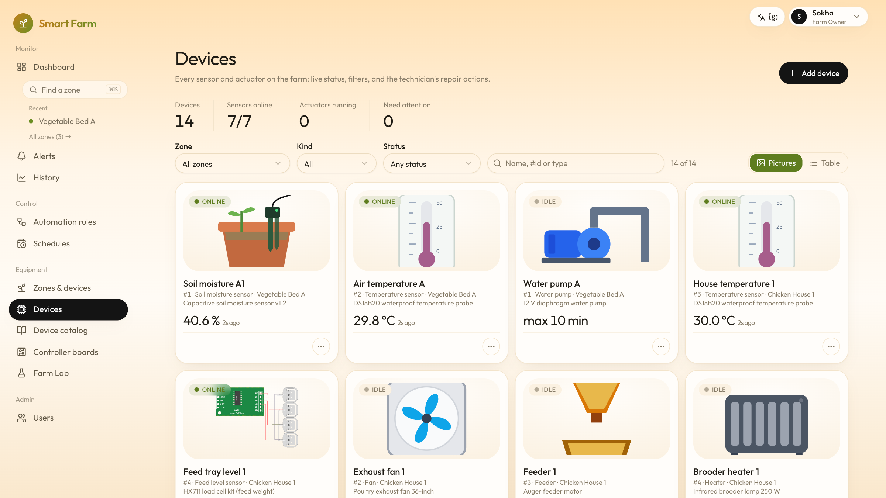
New · Add device
Zone, sensor or actuator, then a type card that says what it is for.
After saving: the #id, the ESP32 line, and a link to set up a rule.
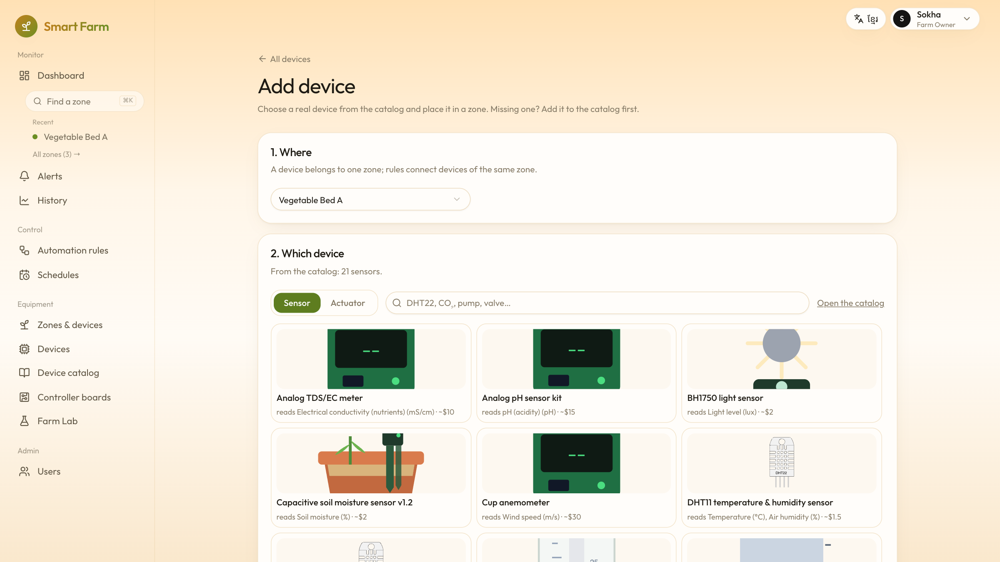
Live · Farm Lab
Virtual devices talk to the server like ESP32 boards. The house starts at 35 °C.
The fan started, then stopped itself at 30 °C after about 10 seconds, long before its 2-minute limit. The heater never started. PASS.
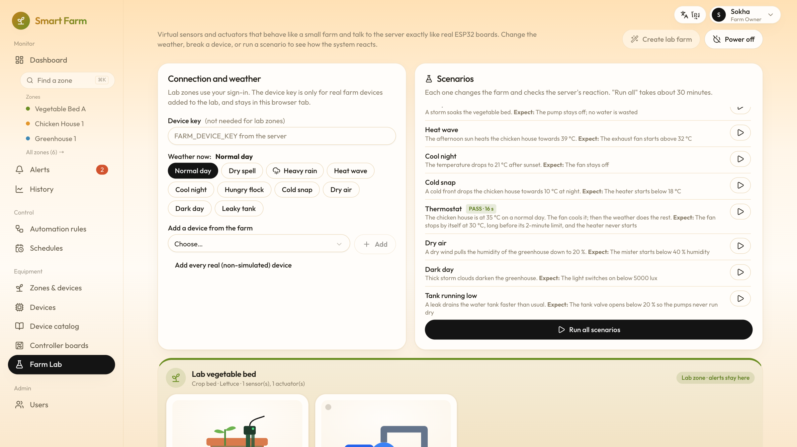
New · Device catalog
1
The catalog entry: “DHT22, 3.3 V, measures temperature and humidity”. Written once, used by every farm.
2
One physical unit made from a model and placed in a zone: “House sensor 1”, with its serial number and notes.
3
Its channels. A DHT22 gives two sensor channels; rules, schedules and the dashboard keep working with these.
New hardware is now data, not code: about 40 models are seeded, and a farm can add models only it sees. Each ESP32 board has its own key; only its SHA-256 is stored.
Live · Catalog
Each model shows its drawing, what it measures, its voltage and price.
Shared models are kept by company staff; a farm’s own models are marked as such.
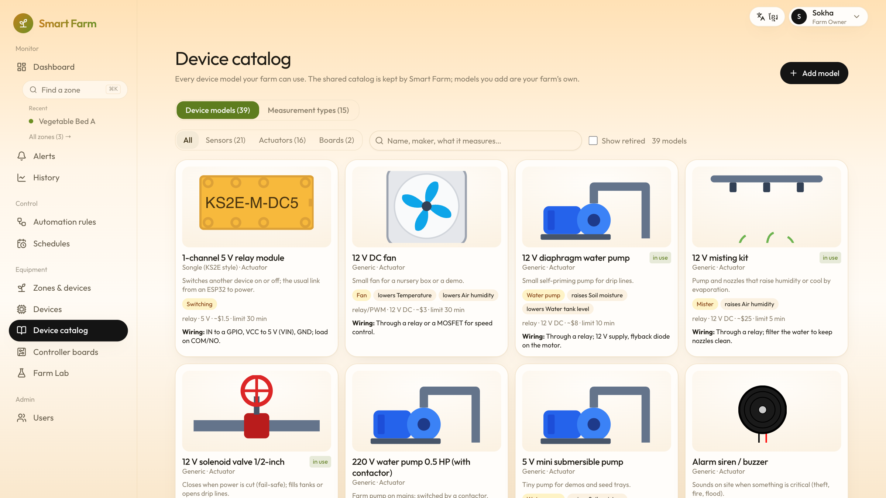
New · One server, many farms
1
Owner, worker and technician always work on their own farm, with the same roles as before.
2
Creates farms and invites each owner by a one-time link. Opening a farm, the admin acts as its owner.
3
Only the farms they are assigned to, and only while the owner allows support; there they act as a technician.
Every request knows the farm it works on, and every lookup goes through one class, Tenancy.
One server, many farms · In the code
The sign-in check puts the request’s farm in Tenancy.
Services wrap every lookup: tenancy.zone(…), tenancy.sensor(…)…
An id from another farm answers 404, so guessing ids reveals nothing. A test found one leak, a delete by id; it is fixed.
service/Tenancy.java
46 /** Something from another farm is answered as "not found" */
47 public <T> T check(T found, Long ownerFarmId, String what, Long id) {
48 if (limited() && !Objects.equals(CURRENT.get().farmId(), ownerFarmId)) {
49 throw new NotFoundException(what, id);
50 }
51 return found;
52 }
54 public Zone zone(Zone z) {
return check(z, z.getFarm().getId(), "Zone", z.getId());
}
55 public Sensor sensor(Sensor s) { ... }
Live · Company
Farms that need attention come first, 20 at a time.
Open a farm to work on it, or invite its owner by link.
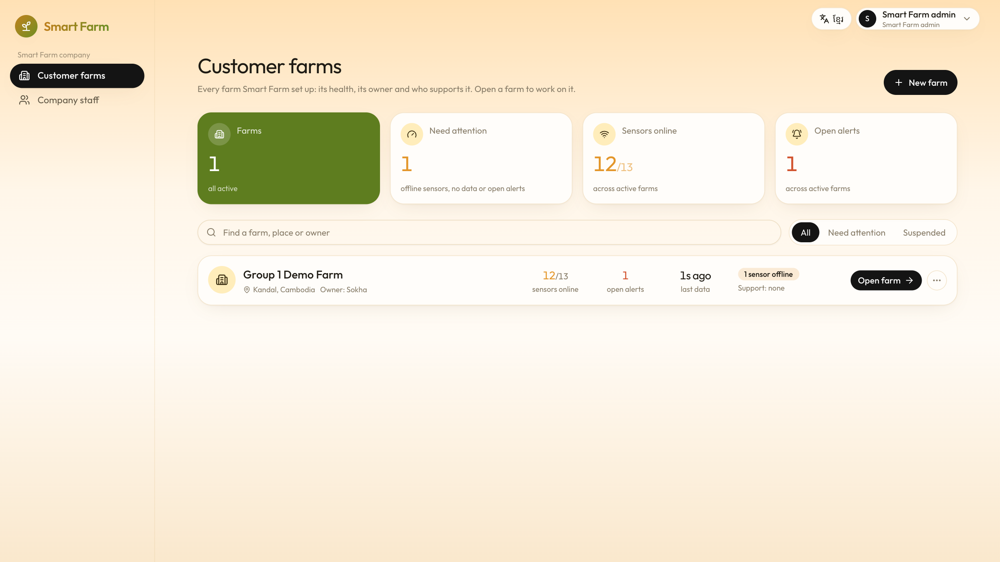
Live · Zone page
Conditions, time in range, machines and alerts at the top.
Then a 24-hour chart per sensor, run time per machine, rules, devices and activity.
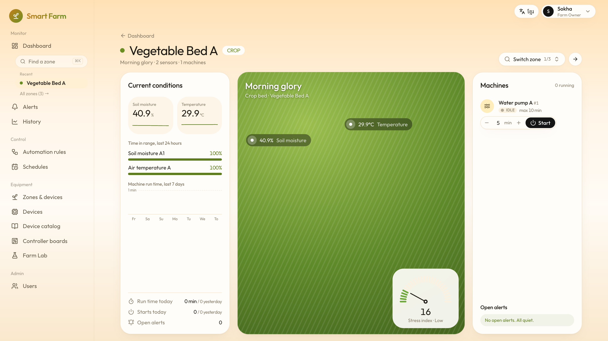
Proof
73
State machines, thermostat rules, interlock, permissions, farms kept apart, catalog, sign-ins kept over a restart.
34
A walkthrough of every use case as owner, technician and worker, all passing.
17
Drought, heat wave, cold snap, thermostat, sensor repair, clogged pipe, power cut… all 17 pass.
Summary
Concepts → diagrams → classes and methods → tests → a farm system that works
The new features followed the same path: a state machine for sensors, hysteresis and an interlock for rules, new kinds as subclasses, models apart from devices, one class that keeps farms apart.
github.com/RamekhCHHOENG/smart-farm-monitoring · Thank you